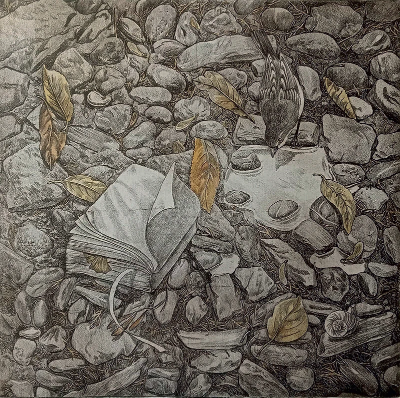
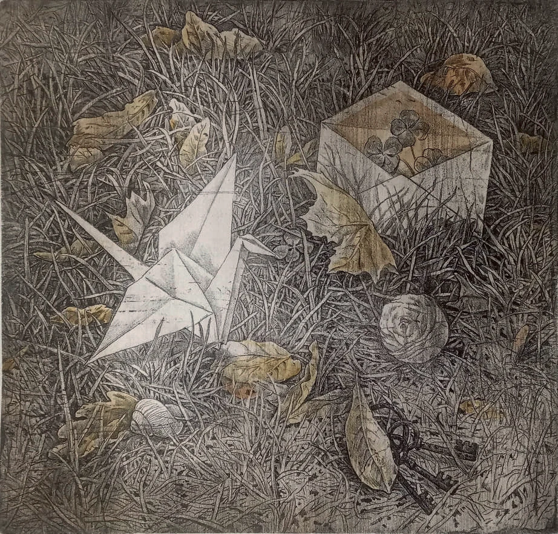
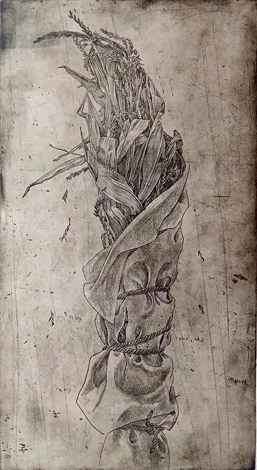
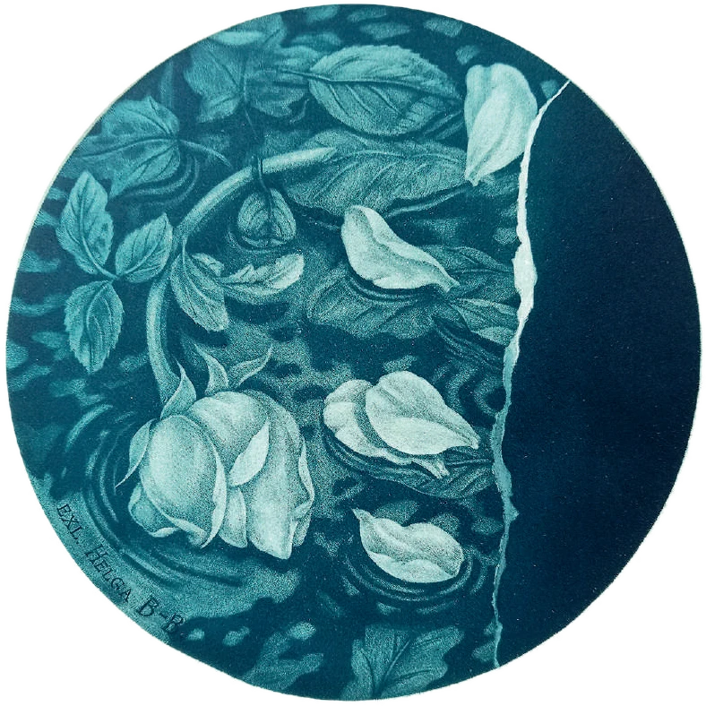
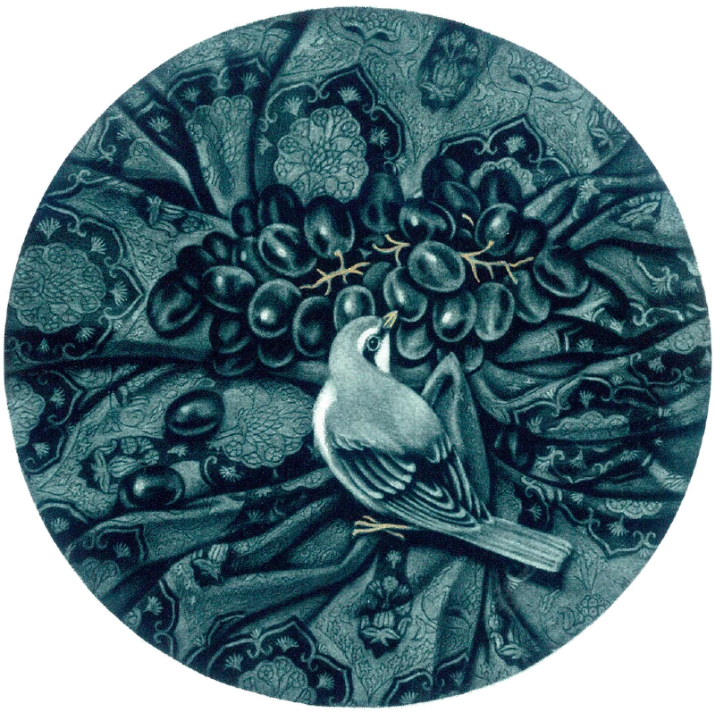
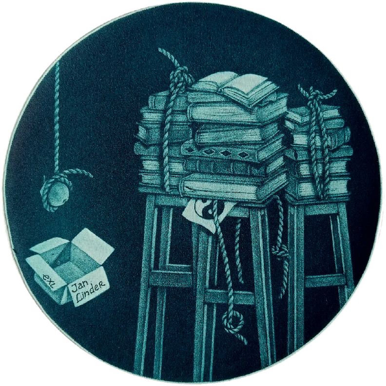
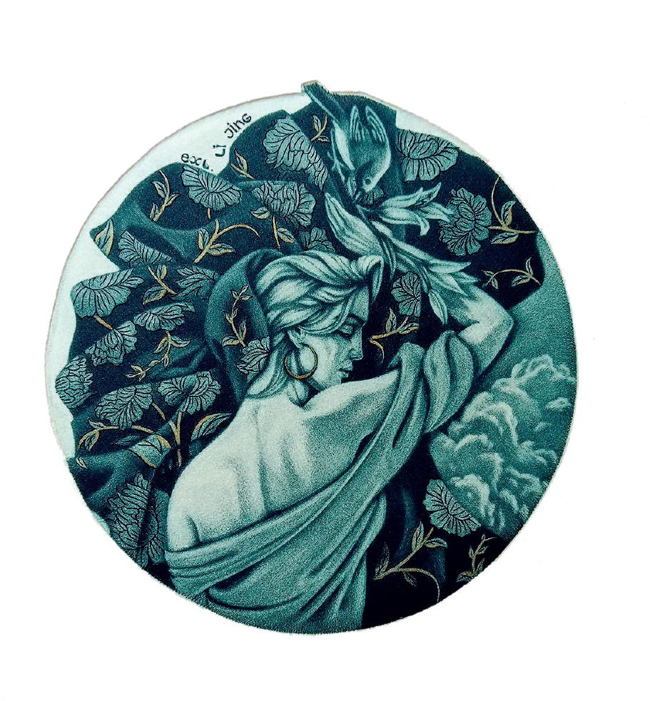
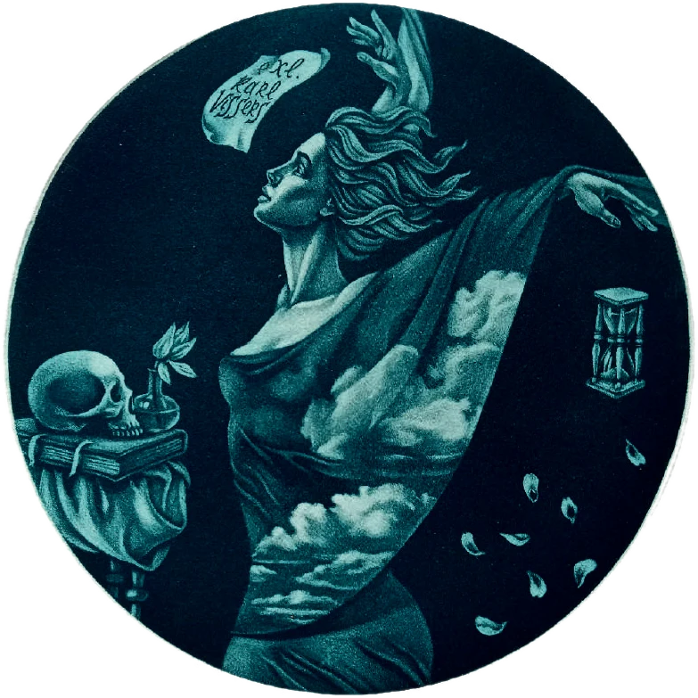

Checklist
List of works
Marina Maroz · 24 works in three rooms, 2020–2025. Select a title to see it on the wall.
Room IEvidences2021–2025


Room IIHarvest2020–2025
- 07

Found2023Soft ground etching on paper35 × 35 cm - 08

Good news2024Soft ground etching on paper35 × 35 cm - 09
 New pearls2025Soft ground etching on paper35 × 35 cm
New pearls2025Soft ground etching on paper35 × 35 cm - 10
 Binded2021Soft ground etching on paper64 × 34 cm
Binded2021Soft ground etching on paper64 × 34 cm - 11

Wide open2021Soft ground etching on paper64 × 34 cm - 12
 Abandoned2020Soft ground etching on paper40 × 70 cm
Abandoned2020Soft ground etching on paper40 × 70 cm
Room IIIEx libris2021–2025
- 13

Bittersweet memories2023Mezzotint on paper⌀ 14 cm - 14

Treasure2021Mezzotint on paper⌀ 14 cm - 15
 Hommage Giorgio de Chirico2023Mezzotint on paper⌀ 14 cm
Hommage Giorgio de Chirico2023Mezzotint on paper⌀ 14 cm - 16
 In flight2022Mezzotint on paper⌀ 14 cm
In flight2022Mezzotint on paper⌀ 14 cm - 17

Cognition2023Mezzotint on paper⌀ 14 cm - 18
 West Side Story2023Mezzotint on paper⌀ 14 cm
West Side Story2023Mezzotint on paper⌀ 14 cm - 19

At rest2022Mezzotint on paper⌀ 14 cm - 20
 Hommage René Magritte2022Mezzotint on paper⌀ 14 cm
Hommage René Magritte2022Mezzotint on paper⌀ 14 cm - 21
 In dreams2021Mezzotint on paper⌀ 14 cm
In dreams2021Mezzotint on paper⌀ 14 cm - 22

Vanity2021Mezzotint on paper⌀ 14 cm - 23
 Books catcher2023Mezzotint on paper⌀ 14 cm
Books catcher2023Mezzotint on paper⌀ 14 cm - 24
 In the secret garden2025Mezzotint on paper⌀ 14 cm
In the secret garden2025Mezzotint on paper⌀ 14 cm